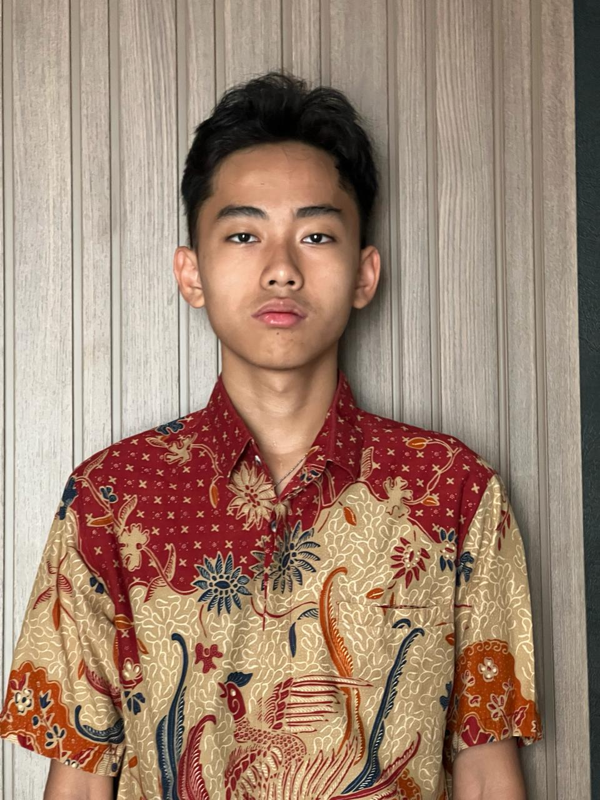

Kelas XI — Semester Genap

Saya Jose Lionel Theo, siswa kelas XIA5 yang hobi bermain bola dan senang berolahraga bersama teman-teman saya. Selama semester ini, saya belajar TIK mulai dari dasar HTML untuk membangun struktur halaman web, CSS untuk mendesain tampilan yang menarik, hingga JavaScript untuk menambahkan interaksi pada website. Melalui pengalaman belajar ini, saya semakin termotivasi untuk mengeksplorasi dunia pengembangan web lebih dalam dan berharap dapat menerapkan kemampuan ini dalam project nyata di masa depan.
| No | Nama Materi | Nilai |
|---|---|---|
| 1 | Biologi | 95 |
| 2 | Fisika | 82 |
| 3 | Matematika Lanjut | 85 |
| 4 | Kimia | 89 |
| 5 | Matematika Wajib | 95 |